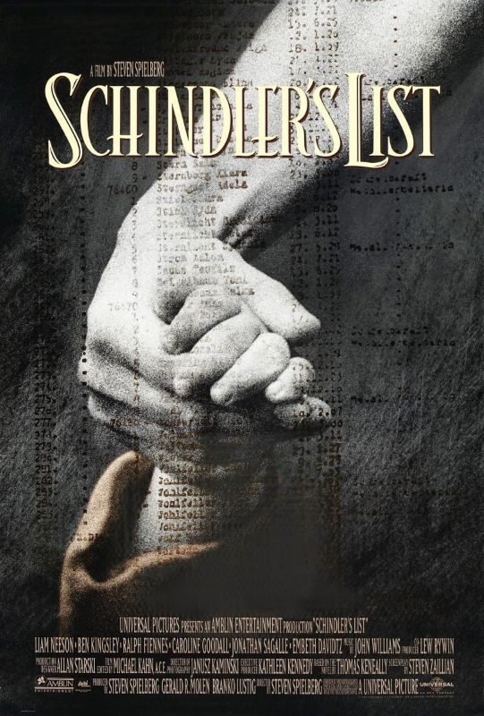

Schindler's List
"Schindler's List" es una película dramática estadounidense de 1993 dirigida por Steven Spielberg, basada en la novela "Schindler's Ark" de Thomas Keneally. La película narra la historia real de Oskar Schindler, un empresario alemán que salvó a más de mil judíos durante el Holocausto al emplearlos en sus fábricas.
La película es conocida por su enfoque crudo y realista sobre el Holocausto, mostrando las atrocidades cometidas por los nazis y la lucha por la supervivencia de los judíos en los campos de concentración. La dirección de Spielberg es magistral, creando una atmósfera intensa y emotiva que captura la brutalidad y la tragedia de esta época oscura de la historia.
La actuación de Liam Neeson como Oskar Schindler es sobresaliente, transmitiendo la evolución del personaje desde un hombre egoísta y oportunista hasta un héroe altruista que arriesga todo por salvar vidas. Ralph Fiennes también destaca en su papel como el cruel comandante nazi Amon Göth.
La cinematografía en blanco y negro de Janusz Kamiński es impactante y conmovedora, capturando la angustia y el sufrimiento de los personajes de una manera visualmente poderosa. La música de John Williams añade una capa adicional de emoción y profundidad a la película.
"Schindler's List" es una película que aborda temas difíciles y perturbadores con sensibilidad y respeto, honrando la memoria de las víctimas del Holocausto y reconociendo los actos de valentía y humanidad en medio de la tragedia. La película ha sido aclamada por la crítica y el público, ganando siete premios Oscar, incluido el de Mejor Película.
En resumen, "Schindler's List" es una obra maestra del cine que no solo es un poderoso recordatorio de la brutalidad del Holocausto, sino también una historia de esperanza, redención y humanidad en tiempos de horror y desesperación. Una película que deja una profunda impresión en los espectadores y que continúa siendo relevante y conmovedora décadas después de su estreno.